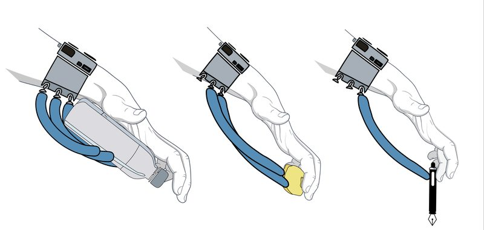
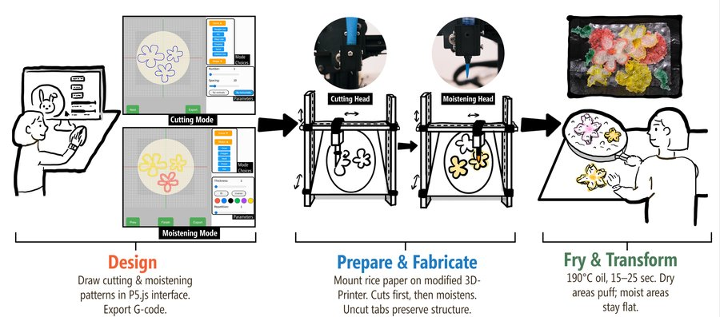
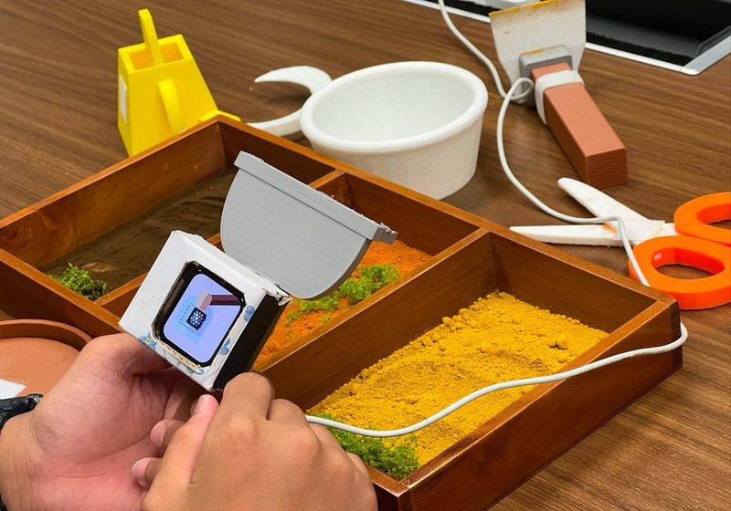
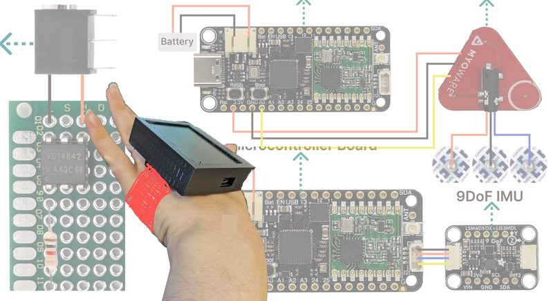
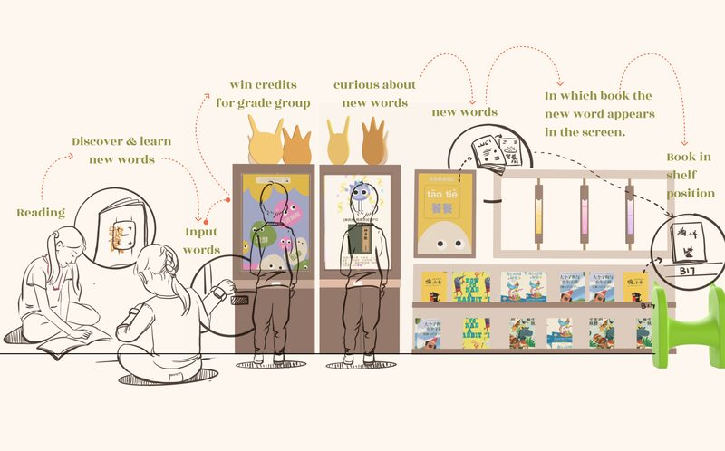

Projects
Research Projects

Brain-Controlled Exoskeleton for Relearning Functional Hand Skills
CHI '26 Workshop · Accepted
A brain-computer interface pipeline integrating neural decoding with a wearable hand exoskeleton for Spinal Cord Injury rehabilitation.
View Project →

PufFab: Making Shape Transformable Rice Paper for Playful Food Fabrication
TEI '26 · Poster
DOI
Video
View Project →

"I Want to Use Technology to Help Farmers in the Future": Enhancing Children's Understanding of Farming through TUI and Embodied Interaction
IDC '25 · Full Paper
DOI
Video
View Project →

Accessible Adaptive Gaming Controllers for People with Motor Disabilities
Designing and evaluating DIY accessible game controllers that empower individuals with upper limb motor disabilities through participatory design methods.
View Project →
Design Projects

WordLink Hub: Empowering Floating Children Through Interactive Learning
An educational system combining a wearable vocabulary device and interactive library installation for migrant children.
SIGHMY: Transforming Office Sighs into Positive Energy
A cactus-shaped smart device using ML audio processing to detect and respond to workplace sighs.